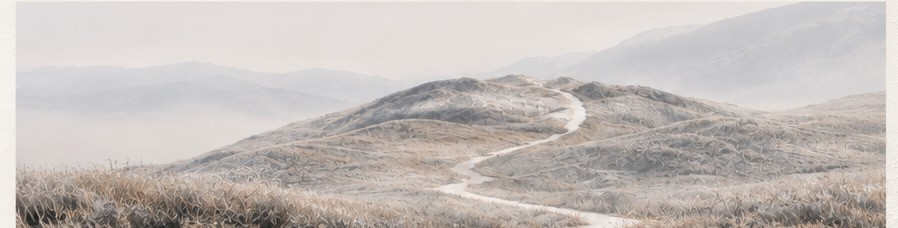

01BRAND / WEB / UX
inimu
香りのある暮らしを、日常に。
ブランド設計 / Webデザイン / 体験設計
PORTFOLIO 2026
課題を読み解き、体験を設計する。
Web Design / UX / Digital Strategy

03 / ABOUT
便利な仕組みが、誰かの負担になることがある。
人と関わる仕事や、企業の中でのさまざまな業務を経験する中で、私が考え続けてきたのは、その裏側にある「なぜ」でした。
なぜ、人はそこで迷うのか。
なぜ、その手順が必要なのか。
誰かの便利さが、別の誰かの不便になっていないか。
今はその問いを、Webデザイン、UX/UI設計、デジタルマーケティングへとつなげています。
プログラミングの基礎を学び、現在は複数のAIツールを使い分けながら、Webサイトやアプリの制作に取り組んでいます。
AIは、構想を形にするための手段のひとつ。
デザインにおいても、生成された画像や表現をそのまま採用するのではなく、ブランドの背景や体験に合っているかを考え、素材の質感、タイポグラフィ、余白、動きに至るまで、意図を持って選択しています。
クライアントの目的、利用者の心理と行動、現場で働く人の負担。
画面の美しさだけで終わらない、意味のある仕組みをつくりたい。
04 / CONTACT
その小さな疑問が、新しい仕組みのはじまりになるかもしれません。
Web・UX/UI・業務改善に関するご相談をお待ちしています。
SEND AN INQUIRY ↗thepath202610@gmail.com